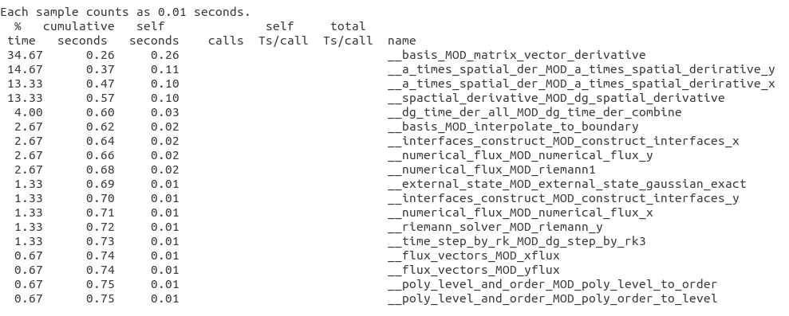
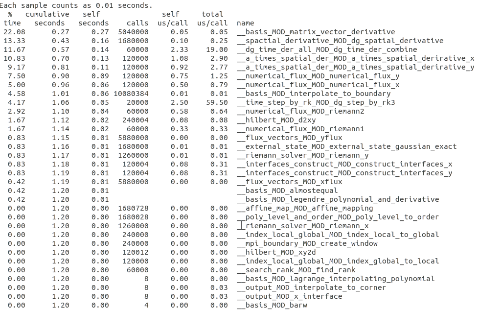
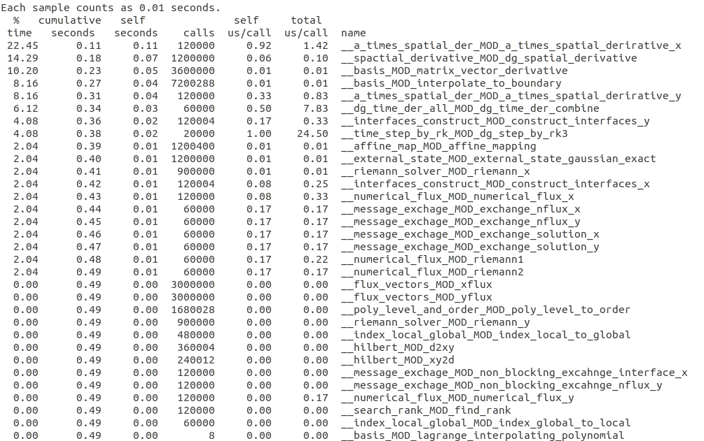

Profiling Method¶
Which is the Time Consuming Routine?¶
Use Gprof¶
Gprof is a performance analysis tool used to profile applications to determine where time is spent during program execution. Gprof is included with most Unix/Linux implementations, is simple to use, and can quickly show which parts of an application take the most time (hotspots). Gprof works by automatically instrumenting your code during compilation, and then sampling the application’s program counter during execution. Sampling data is saved in a file, typically named gmon.out, which can then be read by the gprof command.
Typical Workflow¶
compile/link with -pg option
Set output file (by default gmon.out)
export GMON_OUT_PREFIX=<gprof_output_file>
To see profile and callpath
gprof <executable> <gprof_output_file>
Example¶
Serial performance 4 elements, time step = 2.0e-4, domain [0.0, 1.0], polynomial order: 6
Parallel MPI One-sided Communication
2 processors
Parallel MPI Non-blocking Communication
2 processors
